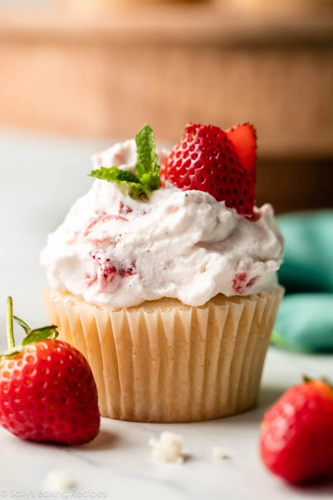

Strawberry Shortcake Cupcakes

Description
Strawberry filled and strawberry topped, these sweet treats are sure to please!
Ingredients
Strawberry Filling
- 1.5 Tablespoons (11g) cornstarch
- 1.5 Tablespoons (23ml) warm water
- 2 cups (about 300g) diced strawberries
- 6 Tablespoons (75g) granulated sugar
- 1 teaspoon lemon zest
Cupcakes
- 1 and 2/3 cups (209g) all-purpose flour (spooned & leveled)
- 1 teaspoon baking powder
- 1/4 teaspoon baking soda
- 1/2 teaspoon salt
- 1 cup (200g) granulated sugar
- 1/2 cup (113g) unsalted butter, melted and slightly cooled
- 2 egg whites
- 1/4 cup (60g) sour cream or plain yogurt
- 3/4 cup (180ml) whole milk
- 2 teaspoons vanilla bean paste
Strawberry Whipped Cream
- 1 and 1/2 cups (360ml) cold heavy cream or heavy whipping cream
- 3 Tablespoons (38g) granulated sugar
- 1 teaspoon vanilla bean paste
- reserved 1/2 cup of strawberry filling
- optional for garnish: strawberry slices and fresh mint
Instructions
-
Make the strawberry filling first: Using a fork, mix the cornstarch and water together in a
small bowl until the cornstarch has dissolved—mixture is thick. Warm the strawberries and sugar together
in a small saucepan over medium heat. Stir the mixture as it cooks, and break up some of the strawberries
as you stir. Bring it to a simmer. Once simmering, stir in the cornstarch mixture. Allow to simmer for 5
minutes, stirring constantly. After 5 minutes, remove from heat, stir in the lemon zest, and cool completely.
Mixture thickens as it cools. (It must completely cool, so transferring to a bowl out of the saucepan helps
speed that up, as does refrigerating it. You can complete a few other steps in the recipe as the mixture cools.)
-
Make the cupcakes: Preheat the oven to 350°F (177°C). Line a 12–cup muffin pan with cupcake liners. This recipe
yields about 15 cupcakes, so line a second muffin pan with 3 cupcake liners, or bake in batches.
-
In a large bowl, whisk the flour, baking powder, baking soda, and salt together. Set aside. In a medium bowl,
whisk the melted butter and sugar together. Mixture will be gritty. Whisk in the egg whites, sour cream, milk,
and vanilla bean paste/extract until combined.
-
Pour the wet ingredients into the dry ingredients and whisk until the batter is completely combined. Batter should
be creamy and mostly smooth; a few small lumps are OK.
-
Pour/spoon the batter into the liners, filling only 2/3 full to avoid spilling over the sides. You should have enough batter for 15 cupcakes.
-
Bake for 20–22 minutes, or until a toothpick inserted in the center comes out clean.
-
Remove cupcakes from the oven and allow them to cool in the pan for 10 minutes, and then transfer to a wire rack to cool completely.
Cupcakes must be completely cooled before filling and topping.
-
Fill the cupcakes: First, set aside 1/2 cup of the filling for the whipped cream topping. Using a sharp knife,
cut a circle into the center of the cooled cupcakes to create a little pocket about 1 inch deep. The piece
you removed will be sort of cone-shaped. Spoon some of the cooled and thickened strawberry filling inside
each carved-out cupcake—use however much will fit. (I use a teaspoon for this. Usually you can fit between 1–2 teaspoons
of filling in each.) Slice/tear off the pointy end of the “cone” piece of cupcake you removed, and gently press the round
piece back on top of the filling.
-
Make the whipped cream: Using a hand mixer or a stand mixer fitted with a whisk attachment, whip the heavy cream,
sugar, and vanilla bean paste/extract on medium-high speed until medium peaks form, about 3–4 minutes. Medium
peaks are between soft/loose peaks and stiff peaks, and are the perfect consistency for topping and piping on desserts.
If you accidentally over-whip the cream, and it looks curdled and heavy, pour in a little bit more cold heavy cream,
and fold it in gently by hand with a spatula until it smooths out. Fold in the reserved 1/2 cup of strawberry filling.
Use immediately or cover tightly and chill in the refrigerator for up to 24 hours.
-
Frost cooled cupcakes.
You may have some leftover if you don't use as much on each cupcake.
Garnish cupcakes with sliced strawberries and/or fresh mint.
-
Serve immediately or store in the refrigerator until ready to serve. Cover and store leftover cupcakes in the refrigerator for up to 5 days.